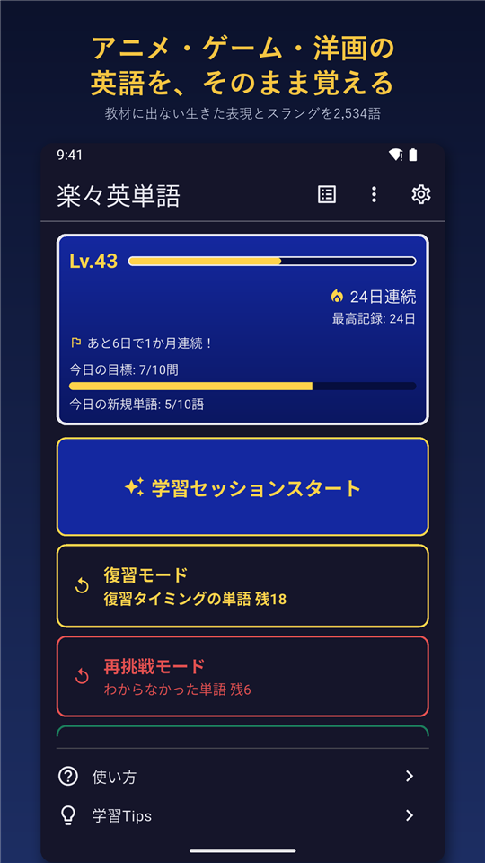
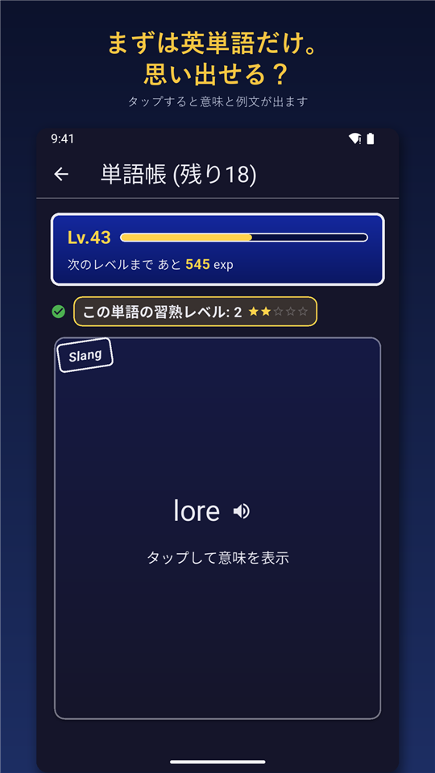
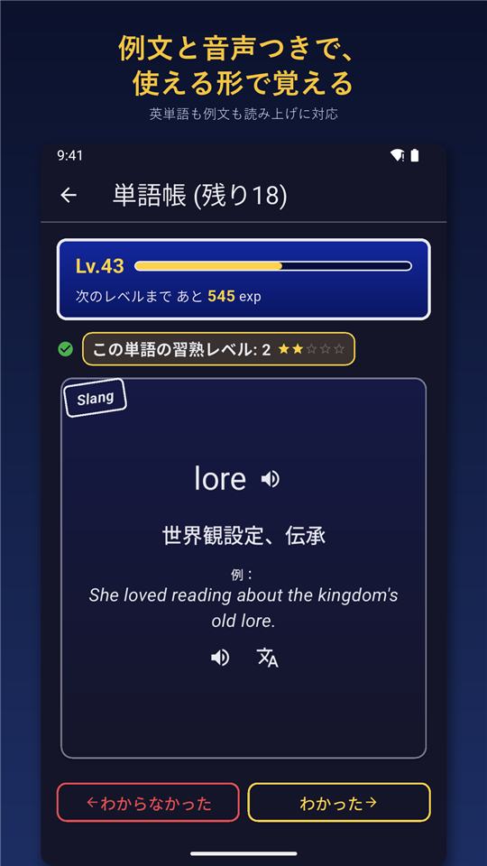
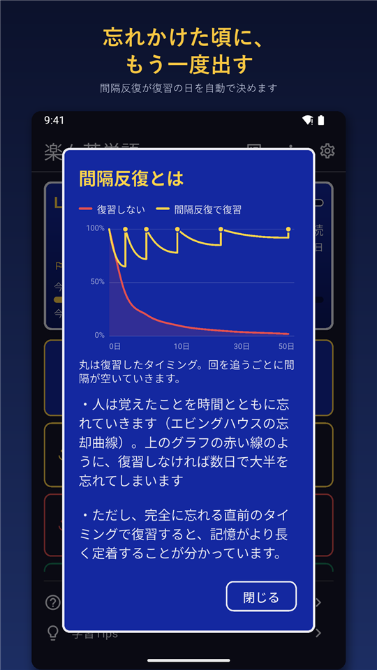
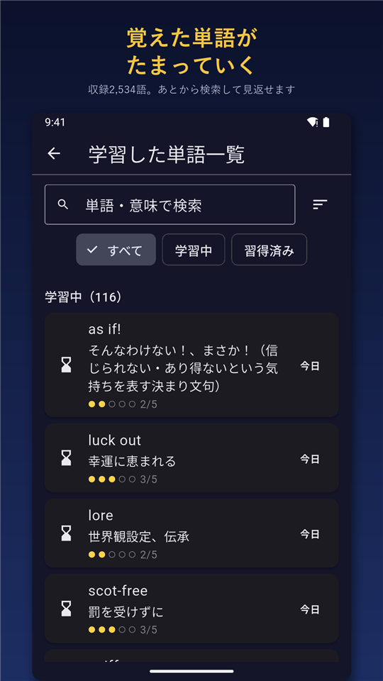
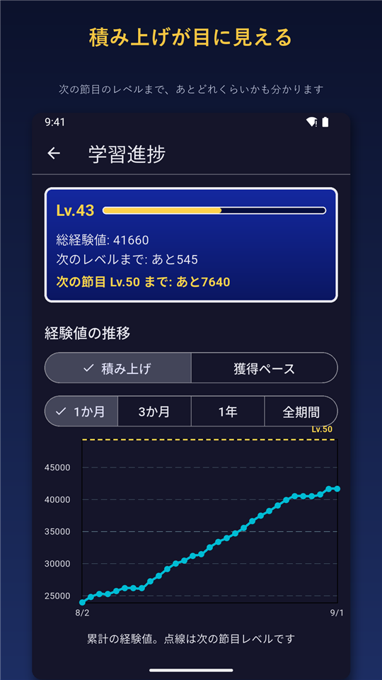
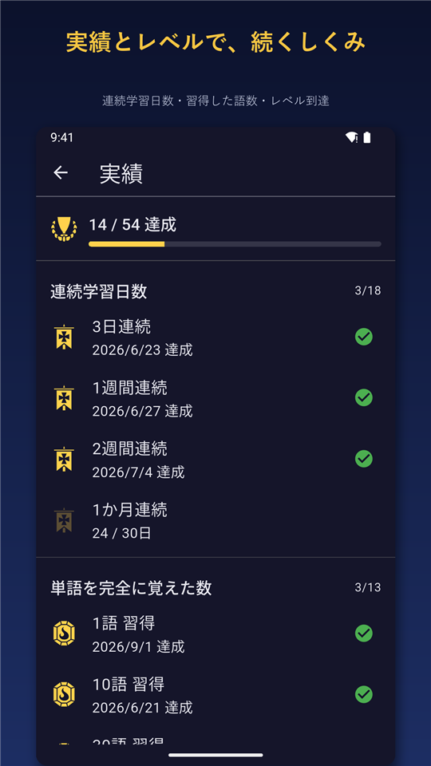
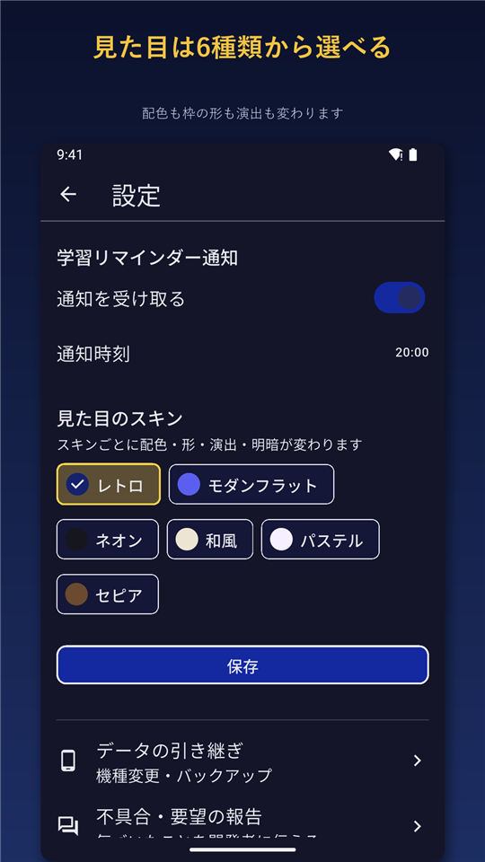

楽々英単語
Android アプリ / Google Play で公開中（2026年9月〜）
ゲーム・アニメ・洋画を英語のまま楽しむための英単語アプリ。TOEIC や教科書に出ない生きた表現やスラングも、間隔反復と音声読み上げで無理なく暗記できます。
- Flutter
- Dart
- drift (SQLite)
- flutter_local_notifications
- google_mobile_ads
- flutter_tts
- fl_chart
主な機能
- 2,500 語以上を同梱。全語に日本語の意味・英英定義・例文・和訳つき
- 間隔反復（1 → 3 → 7 → 14 → 30 日）で忘れかけた頃に自動で復習出題
- 学習 / 復習 / 再挑戦 / 予習の 4 モード、TOEIC スコアに応じた出題
- 経験値・レベル・ストリーク・実績、6 種類のスキン
- 学習記録のバックアップと復元、リマインダー通知、オフライン動作
工夫した点
- 間隔反復の状態（復習間隔・次回日）にゲーム要素が影響しないよう、完全に別レイヤーとして設計
- DB スキーマ変更は移行テストを必ず追加し、既存ユーザーの学習データを壊さない運用ルールを文書化
- 単語データは CSV マスタから自動生成し、例文に見出し語が含まれるかをスクリプトで機械検証
- ストア掲載文の作成、リリース手順の整備、公開後の不具合修正とアップデート








← 横にスクロールできます →